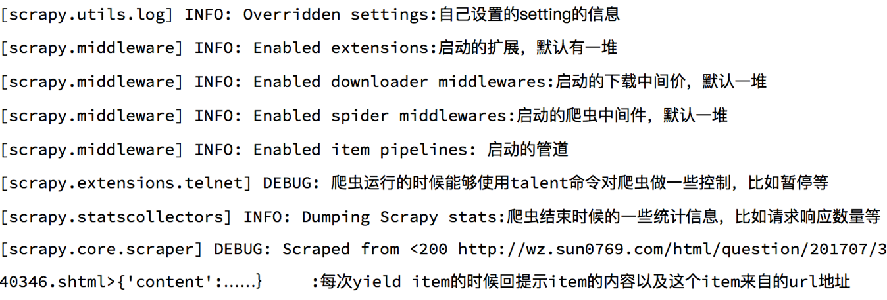

scrapy的日志信息与配置
学习目标：
- 了解 scrapy的日志信息
- 掌握 scrapy的常用配置
- 掌握 scrapy_redis配置
- 了解scrapy_splash配置
- 了解scrapy_redis和scrapy_splash配合使用的配置
1. 了解scrapy的日志信息

2. scrapy的常用配置
- ROBOTSTXT_OBEY 是否遵守robots协议，默认是遵守
- 关于robots协议
- 在百度搜索中，不能搜索到淘宝网中某一个具体的商品的详情页面，这就是robots协议在起作用
- Robots协议：网站通过Robots协议告诉搜索引擎哪些页面可以抓取，哪些页面不能抓取，但它仅仅是互联网中的一般约定
- 例如：淘宝的robots协议
- 关于robots协议
- USER_AGENT 设置ua
- DEFAULT_REQUEST_HEADERS 设置默认请求头，这里加入了USER_AGENT将不起作用
- ITEM_PIPELINES 管道，左位置右权重：权重值越小，越优先执行
- SPIDER_MIDDLEWARES 爬虫中间件，设置过程和管道相同
- DOWNLOADER_MIDDLEWARES 下载中间件
- COOKIES_ENABLED 默认为True表示开启cookie传递功能，即每次请求带上前一次的cookie，做状态保持
- COOKIES_DEBUG 默认为False表示日志中不显示cookie的传递过程
- LOG_LEVEL 默认为DEBUG，控制日志的等级
- LOG_LEVEL = "WARNING"
- LOG_FILE 设置log日志文件的保存路径，如果设置该参数，日志信息将写入文件，终端将不再显示，且受到LOG_LEVEL日志等级的限制
- LOG_FILE = "./test.log"
3. scrapy_redis配置
- DUPEFILTER_CLASS = "scrapy_redis.dupefilter.RFPDupeFilter" # 指纹生成以及去重类
- SCHEDULER = "scrapy_redis.scheduler.Scheduler" # 调度器类
- SCHEDULER_PERSIST = True # 持久化请求队列和指纹集合
- ITEM_PIPELINES = {'scrapy_redis.pipelines.RedisPipeline': 400} # 数据存入redis的管道
- REDIS_URL = "redis://host:port" # redis的url
4. scrapy_splash配置
SPLASH_URL = 'http://127.0.0.1:8050'
DOWNLOADER_MIDDLEWARES = {
'scrapy_splash.SplashCookiesMiddleware': 723,
'scrapy_splash.SplashMiddleware': 725,
'scrapy.downloadermiddlewares.httpcompression.HttpCompressionMiddleware': 810,
}
DUPEFILTER_CLASS = 'scrapy_splash.SplashAwareDupeFilter'
HTTPCACHE_STORAGE = 'scrapy_splash.SplashAwareFSCacheStorage'
5. scrapy_redis和scrapy_splash配合使用的配置
5.1 原理
- scrapy-redis中配置了”DUPEFILTER_CLASS” : “scrapy_redis.dupefilter.RFPDupeFilter”，与scrapy-splash配置的DUPEFILTER_CLASS = ‘scrapy_splash.SplashAwareDupeFilter’ 相冲突！
- 查看了scrapy_splash.SplashAwareDupeFilter源码后，发现他继承了scrapy.dupefilter.RFPDupeFilter，并重写了request_fingerprint()方法。
- 比较scrapy.dupefilter.RFPDupeFilter和scrapy_redis.dupefilter.RFPDupeFilter中的request_fingerprint()方法后，发现是一样的，因此重写了一个SplashAwareDupeFilter，继承scrapy_redis.dupefilter.RFPDupeFilter，其他代码不变。
5.2 重写dupefilter去重类，并在settings.py中使用
5.2.1 重写去重类
from __future__ import absolute_import
from copy import deepcopy
from scrapy.utils.request import request_fingerprint
from scrapy.utils.url import canonicalize_url
from scrapy_splash.utils import dict_hash
from scrapy_redis.dupefilter import RFPDupeFilter
def splash_request_fingerprint(request, include_headers=None):
""" Request fingerprint which takes 'splash' meta key into account """
fp = request_fingerprint(request, include_headers=include_headers)
if 'splash' not in request.meta:
return fp
splash_options = deepcopy(request.meta['splash'])
args = splash_options.setdefault('args', {})
if 'url' in args:
args['url'] = canonicalize_url(args['url'], keep_fragments=True)
return dict_hash(splash_options, fp)
class SplashAwareDupeFilter(RFPDupeFilter):
"""
DupeFilter that takes 'splash' meta key in account.
It should be used with SplashMiddleware.
"""
def request_fingerprint(self, request):
return splash_request_fingerprint(request)
"""以上为重写的去重类，下边为爬虫代码"""
from scrapy_redis.spiders import RedisSpider
from scrapy_splash import SplashRequest
class SplashAndRedisSpider(RedisSpider):
name = 'splash_and_redis'
allowed_domains = ['baidu.com']
# start_urls = ['https://www.baidu.com/s?wd=13161933309']
redis_key = 'splash_and_redis'
# lpush splash_and_redis 'https://www.baidu.com'
# 分布式的起始的url不能使用splash服务!
# 需要重写dupefilter去重类!
def parse(self, response):
yield SplashRequest('https://www.baidu.com/s?wd=13161933309',
callback=self.parse_splash,
args={'wait': 10}, # 最大超时时间，单位：秒
endpoint='render.html') # 使用splash服务的固定参数
def parse_splash(self, response):
with open('splash_and_redis.html', 'w') as f:
f.write(response.body.decode())
5.2.2 scrapy_redis和scrapy_splash配合使用的配置
# 渲染服务的url
SPLASH_URL = 'http://127.0.0.1:8050'
# 下载器中间件
DOWNLOADER_MIDDLEWARES = {
'scrapy_splash.SplashCookiesMiddleware': 723,
'scrapy_splash.SplashMiddleware': 725,
'scrapy.downloadermiddlewares.httpcompression.HttpCompressionMiddleware': 810,
}
# 使用Splash的Http缓存
HTTPCACHE_STORAGE = 'scrapy_splash.SplashAwareFSCacheStorage'
# 去重过滤器
# DUPEFILTER_CLASS = 'scrapy_splash.SplashAwareDupeFilter'
# DUPEFILTER_CLASS = "scrapy_redis.dupefilter.RFPDupeFilter" # 指纹生成以及去重类
DUPEFILTER_CLASS = 'test_splash.spiders.splash_and_redis.SplashAwareDupeFilter' # 混合去重类的位置
SCHEDULER = "scrapy_redis.scheduler.Scheduler" # 调度器类
SCHEDULER_PERSIST = True # 持久化请求队列和指纹集合, scrapy_redis和scrapy_splash混用使用splash的DupeFilter!
ITEM_PIPELINES = {'scrapy_redis.pipelines.RedisPipeline': 400} # 数据存入redis的管道
REDIS_URL = "redis://127.0.0.1:6379" # redis的url
注意：
- scrapy_redis分布式爬虫在业务逻辑结束后并不能够自动退出
- 重写的dupefilter去重类可以自定义位置，也须在配置文件中写入相应的路径
6. 了解scrapy的其他配置
- CONCURRENT_REQUESTS 设置并发请求的数量，默认是16个
- DOWNLOAD_DELAY 下载延迟，默认无延迟，单位为秒
- 其他设置参考：https://www.jianshu.com/p/df9c0d1e9087
小结
- 了解scrapy的日志信息
- 掌握scrapy的常用配置
- 掌握scrapy_redis配置
- 了解scrapy_splash配置
- 了解scrapy_redis和scrapy_splash配合使用的配置